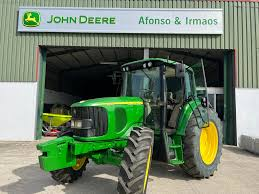

TRATOR JOHN DEERE:
A história de John Deere está intimamente ligada à evolução da agricultura e ao desenvolvimento de máquinas agrícolas. Aqui está um resumo dos principais eventos na história da empresa:
Uma Breve Descrição da História da Empresa:
01) Fundação da Empresa (1837): A John Deere foi fundada por John Deere em Grand Detour, Illinois, em 1837. Inicialmente, Deere era um ferreiro que percebeu a necessidade de um arado de aço polido que não grudasse o solo durante o arado, facilitando o trabalho dos agricultores. 02) Arado de Aço (1838): Em 1838, John Deere fabricou seu primeiro arado de aço polido, uma inovação que revolucionou a agricultura. O arado de aço era mais durável e eficiente do que os arados de madeira existentes na época. 03)Diversificação de Produtos (século XX): Ao longo do século XX, a John Deere continuou a diversificar sua linha de produtos, fabricando uma ampla variedade de equipamentos agrícolas, de construção e máquinas para paisagismo. A John Deere continua a desempenhar um papel crucial na modernização da agricultura, oferecendo uma ampla gama de produtos e tecnologias para apoiar os agricultores em todo o mundo.
ALGUNS MODELOS DA LINHA 2024:
Trator 3036EN;
Tratores 7M;
Trator de 250cv 8250R;
O código acima é o construtor do jQuery. No entanto para facilitar o uso do jQuery, uma vez que dentro de todo o código JavaScript de um programa usa-se demasiadamente este construtor, criou-se um apelido que é justamente o caractere $ que vimos anteriormente.
Teste do TRATOR:
Trator John DeereTrator jhon Deere 8R
O trator mais potente produzido no Brasil, entregando ainda mais produtividade;Opçao de pneus 800/70R38, duplos na traseira, maior traçao e flutuaçao,eixo dianteiro com suspensão independente (ILS), até 9% a mais em produtividade.
Mais Informações sobre a Maquina
A serie é composta por seis modelos que vão de 270 a 400CV, O tratores 8R são os maiores potentes fabricados no Brasil com (370CV), Sua nova Transmissão de 23 marchas.
Manipulando o DOM utilizando o método jQuery .clone()
O .clone() é um método que executa uma cópia
profunda do conjunto de elementos HTML determinado, o que
significa que ele copia os elementos indicados e todos os
elementos de seus descendentes e nós de texto.

Conheça os CURSOS CPT
© 2021-2023. Todos Os Direitos São Reservados.